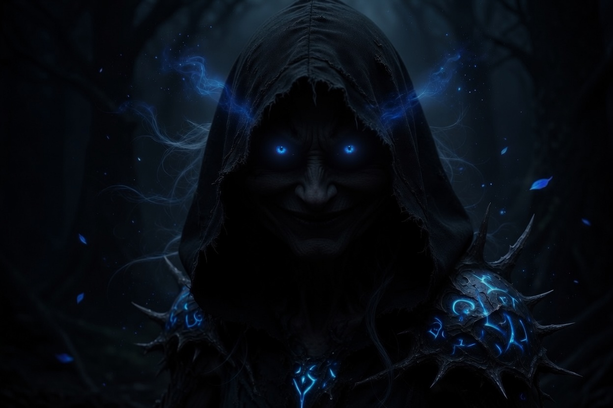

Lang geleden brandde in Zilverweide een molen tot de grond toe af. Een ongeluk, zei men. Maar er zijn namen die sindsdien niemand meer hardop uitspreekt.
De Rozen van Zilverweide is een coöperatief mysterie dat je met je groep op locatie speelt. Ieder krijgt een eigen rol, een eigen scherm en een eigen stukje van de waarheid. Alleen samen leggen jullie bloot wat er die nacht werkelijk gebeurde.
Binnenkort speelbaar.

[Placeholder: sfeerbeeld 2]
[Placeholder: sfeerbeeld 3]
[Placeholder: sfeerbeeld 4]
Volg ons en hoor als eerste wanneer het dorp zijn poorten opent.
Eerder meespelen? Deze zomer spelen de eerste groepen. Stuur een berichtje en test het mysterie als een van de eersten.